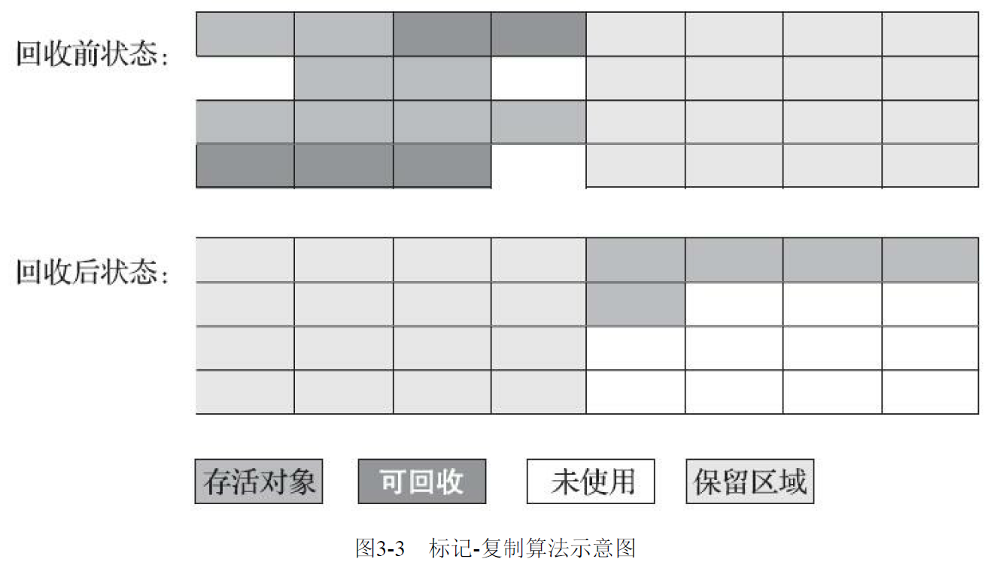
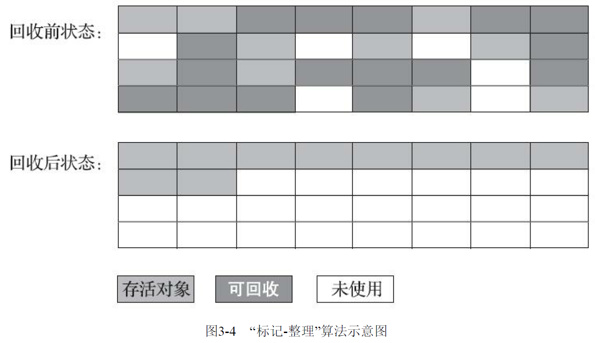
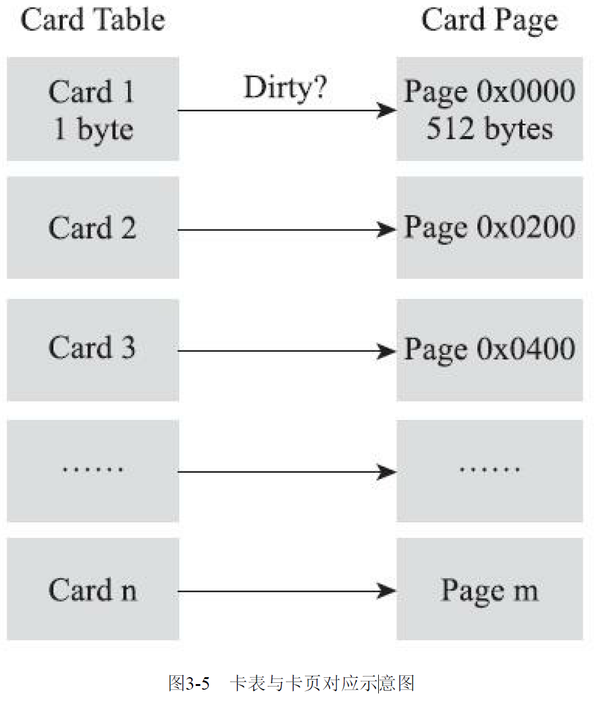

JVM内存分配策略与垃圾收集
前言
看过部分机构的教学视频，针对这部分内容，仍然觉得是《深入理解Java虚拟机 第三版》（下文简述：该书）一书中解释的更为系统，更为条理。
先惭愧一番，笔者在2020年第一次阅读该书的时候，曾经做过一次读书笔记，链接在这。时隔几年之后，再次看当年写的，那叫什么玩意儿？纯粹的一个书籍摘录？完全没有思考，现在能回忆起来，可能当时跟着书里面敲过几个案例而已。然而，最搞笑的事情是，我竟然忘了自己做过这种蠢事了。直到最近重新捡起JVM的时候，才看到之前写的文章。
这里纯当给众看官一个笑话吧，一个赤裸裸的反面教材
回到标题，以该书第三章标题作为本篇的标题，也是我们熟悉JVM原理最终调优需要解决的问题，就是如何让这两件事更优雅的去工作。
再次写，梳理好思路，形成自己的东西吧。
关于该书的阅读感受
首先，公认的（包括我在内），这本书是国内最好的、系统的介绍JVM的书籍（直到2024年了，依旧没有发现与之媲美的）。
再来，笔者阅读过第二版与第三版，如果你还没有，直接入手第三版即可，第三版中增加了很多关于JDK8之后的JVM的介绍与比较，是值得看的。
该书，更多的要当一本JVM手册书去看，时不时的要去翻翻，才能有更多的体会。建议不要妄想一下子从头到尾啃完，这个难度非常大，至少我是没有这个水平。
再来说一个问题，周老师的这本书的章节排版上，讲实话读一遍两遍（可能还没读完，读一半的那种），你可能会有一个感觉，读到后面忘掉前面。我仔细想了一下，为啥会有这个感觉？
我的体会是，书中大量地方其实是穿插介绍的，并没有走总分这条线下来。作者在书中前言也提到：
该书前言节选：
本书一共分为五个部分：走进Java、自动内存管理、虚拟机执行子系统、程序编译与代码优化、高校并发。各个部分之间基本上是相互独立的，没有必然的前后依赖关系，读者可以从任何一个感兴趣的专题开始阅读，但是各个部分各个章节间则有先后顺序。
正因为如此，所以有个问题就是：如果你在阅读，需要你自己形成一个总分的脉络，来理解JVM的底层，这样才能助于记忆。 不然两天不摸，你可能就忘了。
阅读顺序
既然如此，我在翻过3-4遍该书之后，有个新的认识，这里分享出来一个可以参考的阅读顺序。
注： 这里的阅读顺序更多的是侧重运行时的原理，该书的主体脉络也是如此。至于编译原理【惭愧，大学学的编译原理课程早就还给老师了】相关的，该书中介绍的篇幅其实是相对少的，在第10章和第11章有所介绍。毕竟我们老生常谈的JVM调优，更多侧重的是运行时的优【解】啊，不是编译的优化。所以这部分，我也不作细节阐述。
- JVM内存模型相关：这部分死磕，一个字都别拉下的那种，而且必须熟记于心，因为这是所有的JVM后续工作的基础。对应该书，第2.2小节。
- 对象的创建过程：解释如何创建及内存布局相关，对应该书，第2.3节
2.1. 类加载器及对象的加载过程：对应书中第7章，包括双亲委派模型等。 - 再次细致的熟悉栈帧结构：第8.2小节
- 对象内存分配与回收策略：对应该书，第3.8小节。
- 垃圾收集算法理论：对应该书，第3.2、3.3、3.4小节
- 垃圾收集器相关：对应该书，第3.5、3.6小节
6.1. 第3.7小节，如何选择合适的垃圾收集器 - 调优命令与工具：第4章，JVM命令行及可视化工具
- 调优案例分析与实战：第5章全篇，不要在意书中提到的例子是不是跟你工作有关，重点体会作者调优的思路，以及理解为什么要这样做即可。
- 剩下的内容：这部分，我个人觉得，看你兴趣翻阅看即可。
9.1. 第1章的背景，了解了解Java的发展历程；
9.2. 第6章，类文件结构，这部分了解，了解之后可能对类加载过程更深刻一点，完全不用背；
9.3. 第8章其余小节，了解字节码执行引擎其余的细节，比如动态类型支持的原理；
9.4. 第10、11章，这部分就跟编译原理相关了，第11.4.3小节，逃逸分析可以了解；
9.5. 第12、13章，这部分介绍JVM在处理并发程序时的一些原理，特别是第12.3小节，Java内存模型（JMM）值得一看。
9.6. 其余边角，不一一例举。
JVM内存模型
这部分内容参考，另外一篇文章：JVM内存模型
内存分配与垃圾收集
阐述从分配到垃圾收集过程中的细节
内存分配策略
注： 这部分非常重要，只有充分理解了一个对象在内存中的分配的过程，在遇到JVM性能调优的问题的时候，再结合具体的垃圾收集器的工作的表现，才有明确的思路去进行参数优化。
否则的话，你虽然看到譬如gc信息的时候，你看到了是这样的，但是不知道为什么会造成这样，间接的你不会直到可能存在的代码问题，更别谈参数调优了。
逃逸分析
注： 书中关于这部分描述，在第11章，第11.4.3小节中有详细阐述。目的就是通过逃逸分析手段，来判断对象是否可以分配或者间接引用栈上内存，而不分配在堆上。这部分隶属于编译优化的技术。
逃逸分析基本原理：分析对象动态作用域，当一个对象在方法里面被定义之后，它可能被外部方法所引用，例如作为调用参数传递到其它方法中，这种称为方法逃逸；甚至可能被外部线程访问到，譬如赋值给可以在其它线程中访问的实例变量，这种成为线程逃逸。
从不逃逸、方法逃逸到线程逃逸，称为对象由低到高的不同逃逸程度。
如果逃逸程度比较低（除线程逃逸之外的），可以用下面几个方法来优化对象实例的分配：
- 栈上分配（Stack Allocations）：直接在栈上分配，减轻垃圾收集器的压力，随着栈销毁而销毁。
注：目前HotSpot里面没有做这项优化。 - 标量替换（Scalar Replacement）：标量是指一个数据已经无法再分解成更小的数据来表示了，Java虚拟机中的原始数据类型（int、long等数值类型及reference类型等）都不能再进一步分解了，那么这些数据就称之为标量。反之称之为，聚合量。
如果把一个Java对象拆散，根据程序访问的情况，将其用到的成员变量恢复为原始类型来访问，这个过程就称之为标量替换。对逃逸程度要求更高，不允许方法逃逸之外的情况产生。 - 同步消除（Synchronization Elimination）：如果变量不会逃出线程，自然变量的读写不会出现竞争，对这个变量实施的同步措施也可以安全的被消除。
笔者在本地JDK1.8环境中的默认JVM参数发现，目前1.8.0版本，关于逃逸分析（**-XX:+DoEscapeAnalysis）及标量替换（-XX:+EliminateAllocations）和同步消除（-XX:+EliminateLocks**）两个关联参数是默认打开的。
在Eden区分配
大多数情况下，对象在新生代中 Eden 区分配。当 Eden 区没有足够空间进行分配时，虚拟机将发起一次Minor GC。
大量的对象被分配在eden区，eden区满了后会触发minor gc，可能会有99%以上的对象成为垃圾被回收掉，剩余存活的对象会被挪到为空的那块survivor区，下一次eden区满了后又会触发minor gc，把eden区和survivor区垃圾对象回收，把剩余存活的对象一次性挪动到另外一块为空的survivor区，因为新生代的对象都是朝生夕死的，存活时间很短，所以JVM默认的8:1:1的比例是很合适的，让eden区尽量的大，survivor区够用即可，
JVM默认有这个参数 -XX:+UseAdaptiveSizePolicy(1.8默认开启)，会导致这个8:1:1比例自动变化，如果不想这个比例有变化可以设置参数 -XX:-UseAdaptiveSizePolicy
当Eden区没有足够空间进行分配时，虚拟机将发起一次Minor GC，GC期间虚拟机又发现无法存入Survior空间，所以只好把新生代的对象提前转移到老年代中去，老年代上的空间如果足够存放，所以不会出现Full GC
Minor GC与Full GC不同
- Minor GC/Young GC：指发生新生代的的垃圾收集动作，Minor GC非常频繁，回收速度一般也比较快。
- Major GC/Full GC：一般会回收老年代 ，年轻代，方法区的垃圾，Major GC的速度一般会比Minor GC的慢10倍以上。
大对象直接进入老年代
大对象就是需要大量连续内存空间的对象（比如：字符串、数组）。JVM参数 -XX:PretenureSizeThreshold 可以设置大对象的大小，如果对象超过设置大小会直接进入老年代，不会进入年轻代，这个参数只在 Serial 和ParNew两个收集器下有效。
长期存活的对象进入老年代
既然虚拟机采用了分代收集的思想来管理内存，那么内存回收时就必须能识别哪些对象应放在新生代，哪些对象应放在老年代中。为了做到这一点，虚拟机给每个对象一个对象年龄（Age）计数器。这个存储在对象头中。
如果对象在 Eden 出生并经过第一次 Minor GC 后仍然能够存活，并且能被 Survivor 容纳的话，将被移动到 Survivor空间中，并将对象年龄设为1。对象在 Survivor 中每熬过一次 MinorGC，年龄就增加1岁，当它的年龄增加到一定程度（默认为15岁，CMS收集器默认6岁，不同的垃圾收集器会略微有点不同），就会被晋升到老年代中。对象晋升到老年代的年龄阈值，可以通过参数 -XX:MaxTenuringThreshold 来设置。
对象动态年龄判断
当前放对象的Survivor区域里(其中一块区域，放对象的那块s区)，一批对象的总大小大于这块Survivor区域内存大小的50%(-XX:TargetSurvivorRatio可以指定)，那么此时大于等于这批对象年龄最大值的对象，就可以直接进入老年代了。
例如Survivor区域里现在有一批对象，年龄1+年龄2+年龄n的多个年龄对象总和超过了Survivor区域的50%**，此时就会把年龄n(含)以上的对象都放入老年代。这个规则其实是希望那些可能是长期存活的对象，尽早进入老年代**。对象动态年龄判断机制一般是在minor gc之后触发的。
老年代空间分配担保机制
年轻代每次minor gc之前JVM都会计算下老年代剩余可用空间
如果这个可用空间小于年轻代里现有的所有对象大小之和(包括垃圾对象)就会看一个 -XX:-HandlePromotionFailure (jdk1.8默认就设置了)的参数是否设置了如果有这个参数，就会看看老年代的可用内存大小，是否大于之前每一次minor gc后进入老年代的对象的平均大小。
如果上一步结果是小于或者之前说的参数没有设置，那么就会触发一次Full GC，对老年代和年轻代一起回收一次垃圾，如果回收完还是没有足够空间存放新的对象就会发生”OOM”
当然，如果Minor GC之后剩余存活的需要挪动到老年代的对象大小还是大于老年代可用空间，那么也会触发Full GC，Full GC完之后如果还是没有空间放Minor GC之后的存活对象，则也会发生“OOM”
垃圾回收算法
这部分重点搞清楚下面几个问题：
- 什么对象判定为活着的？
- 无用对象怎么回收？
- 节点扫描的细节
- 垃圾收集器相关细节
注：核心的思想，在明确什么对象能回收之后，怎么更好、更快的收集。后面HostSpot回收算法实现细节里面诞生的种种算法实现场景，就是慢慢的优化各种回收扫描时的问题而诞生的。
对象存活判定法则
引用计数法（Reference Couting）
经典的说法：对象中添加一个引用计数器，每当有一个地方引用它时，计数器加一；当引用失效时，计数器值减一；任何计数器为零的对象就是不可能再被使用的。
主流的Java虚拟机没有选用引用计数法来管理内存，主要原因：这个看似简单的算法有很多例外情况需要考虑，必须要配合大量额外的处理才能保证正确的工作，譬如单纯的引用计数就很难解决两个对象循环引用的问题。
可达性分析算法（Reachability Analysis）
基本原理： 通过一系列称为“GC Roots”的根对象作为起始点集，从这些点开始，根据引用向下搜索，搜索过程所走的路径称之为“引用链”（Reference Chain），如果某个对象到GC Roots间没有任何引用链（Reference Chain），如果某个对象到GC Roots间没有任何引用链相连，或者说（图论）从GC Roots到这个对象不可达时，则证明此对象时不可能再引用的。
Java技术体系中，可固定作为GC Roots对象包括以下几种类型：
- 在虚拟机栈（栈帧中的本地变量表）中引用的对象，譬如各个线程被调用的方法堆栈中使用到的参数、局部变量、临时变量。
- 在方法区中 类静态属性 引用的对象，譬如Java类的引用类型静态变量
- 在本地方法栈中JNI（即通常所说的Native方法）引用的对象。
- Java虚拟机内部的引用，如基本数据类型对应的Class对象，一些常驻的异常对象（比如NullPointException、OutOfMemoryError）等，还有系统类加载器。
- 所有被同步锁（synchronized关键字）持有的对象。
- 反映Java虚拟机内部情况的JMXBean、JVMTI中注册的回调、本地代码缓存等。
关于引用
在JDK1.2之后，Java对引用的概念进行了扩充，将引用分为 强引用（Strongly Re-ference）、软引用（Soft Reference）、弱引用（Weak Reference）、和 虚引用（Phantom Reference） 这4种，这4种引用强度依次逐渐减弱。 - 强引用是最传统的“引用”的定义，是指在程序代码之中普遍存在的引用赋值，即类似“Object obj=new Object()”这种引用关系。无论任何情况下，只要强引用关系还存在，垃圾收集器就永远不会回收掉被引用的对象。
- 软引用是用来描述一些还有用，但非必须的对象。只被软引用关联着的对象，在系统将要发生内存溢出异常前，会把这些对象列进回收范围之中进行第二次回收，如果这次回收还没有足够的内存，才会抛出内存溢出异常。在JDK 1.2版之后提供了
SoftReference类来实现软引用。 - 弱引用也是用来描述那些非必须对象，但是它的强度比软引用更弱一些，被弱引用关联的对象只能生存到下一次垃圾收集发生为止。当垃圾收集器开始工作，无论当前内存是否足够，都会回收掉只被弱引用关联的对象。在JDK 1.2版之后提供了
WeakReference类来实现弱引用。 - 虚引用也称为“幽灵引用”或者“幻影引用”，它是最弱的一种引用关系。一个对象是否有虚引用的存在，完全不会对其生存时间构成影响，也无法通过虚引用来取得一个对象实例。 为一个对象设置虚引用关联的唯一目的只是为了能在这个对象被收集器回收时收到一个系统通知。 在JDK 1.2版之后提供了
PhantomReference类来实现虚引用。关于finalize方法
要真正宣告一个对象死亡，至少要经历两次标记的过程： - 如果对象在进行可达性分析后发现没有与GC Roots相连接的引用链，那他将会被第一次标记
- 随后进行一次筛选，筛选的条件是次对象是是否必要执行finalize()方法。假如对象没有覆盖finalize()方法，或者finalize()方法已经被虚拟机调用过，那么虚拟机将这两种情况都视为“没有必要执行”。
- 正因为虚拟机的这种判定规则，所以不建议通过finalize试图“挽救”对象
回收方法区
《Java虚拟机规范》中提到过可以不要求虚拟机在方法区中实现垃圾收集器。
方法区的垃圾收集主要回收两个部分： 废弃的常量和不再使用的类型
注：方法区通常能回收的对象都比较少，回收程度都比较低，正因为如此，通常都需要Java虚拟机具备类型卸载的能力，以保证不会对方法区造成过大的压力。JDK8中常用的CMS垃圾收集器，参数：-XX:+CMSClassUnloadingEnabled，默认已经开了。
- 回收废弃常量与回收Java堆中的对象非常相似，如果没有任何字符串对象引用常量池中的常量，且虚拟机中也没有其它地方引用这个字面量。如果此时发生内存回收，而且垃圾收集器判定必要的话，则这个常量会被回收。
- 判定一个类型是否属于“不再被使用的类”的条件就比较苛刻，需要同时满足下面三个条件：
注：书中提到了一本可以说是工人的系统介绍GC原理的第一的一本书，很有意思：《The Garbage Collection Handbook》，有兴趣的可以找来看看，有中译版本。
分代收集理论
目前商业虚拟机的垃圾收集器，大多数都遵循了“分代收集”的理论进行设计的。
注：书中有一个标注，值得注意的时候，在最新的几款垃圾收集器，都倾向于面向全区域收集设计的思维，或者可以支持全区域不分代收集的工作模式。
这个是有两个分代假说：
- 弱分代假说（Weak Generational Hypothesis ）：绝大多数对象都是朝生夕灭的。
- 强分代假说（String Generational Hypothesis）：熬过越多次垃圾收集过程的对象就越难以消亡。
这两个分代假说共同奠定了多款常用的垃圾收集器的一致的设计原则：收集器应该将Java堆划分出不同的区域，然后将回收对象一句其年龄（年龄即对象熬过垃圾收集的过程的次数）分配到不同的区域之中存储。
在Java堆划分出不同的区域之后，垃圾收集器才可以每次只回收其中某一个或者某些部分的区域——因而才有了 “Minor GC”“Major GC”“Full GC” 这样的回收类型的划分；也才能够针对不同的区域安排与里面存储对象存亡特征相匹配的垃圾收集算法——因而发展出了 “标记-复制算法”“标记-清除算法”“标记-整理算法” 等针对性的垃圾收集算法。
注：这是目前主流垃圾收集算法诞生的背景。
通常意义下，直接可以按照不同内存区域中的对象，直接回收，但是往往存在一个明显的困难： 对象不是孤立的，对象之间会存在跨代引用，为了解决这个问题，就需要对分代收集理论添加第三条经验法则：
3) 跨代引用假说（Intergenrational Reference Hypothesis）：跨代引用相对于同代引用来说仅占极少数。
这其实是可根据前两条假说逻辑推理出一个隐含推论：存在相互引用关系的两个对象，是应该倾向于同时生存或者同时消亡。举个例子：如果某个新生代对象存在跨代引用，由于老年代对象难以小王，该引用会使得新生代对象在收集时同样得以存活，进而在年龄增长晋升到老年代中，这是跨代引用自然就消除了。
根据第三条假说，诞生了一个对后面HotSpot回收算法实现的重要设定：不应再为了少量的跨代引用去扫描整个老年代，也不必浪费空间专门记录每一个对象是否存在及存在哪些跨代引用，只需在新生代上建立一个全局的数据结构（称之为“记忆集”，Remembered Set），这个结构把老年代划分成若干小块，标识出老年代的哪一块内存会存在跨代引用。
作用就是：此后当发生MinorGC时，只有包含了跨代引用的小块内存里的对象才会被加入到GC Roots扫描。虽然维护会增加一定开销，但是相比扫描整个老年代来说，还是划算的。
关于GC名词的统一定义
- 部分收集（Partial GC）：指 目标不是完整收集整个Java堆的垃圾收集，其中又分为
- 新生代收集（Minor GC/Young GC）：指目标只是新生代的垃圾收集。
- 老年代收集（Major GC/Old GC）：指目标只是老年代的垃圾收集。 目前只有CMS收集器会有单独收集老年代的行为。另外请注意“Major GC”这个说法现在有点混淆，在不同资料上常有不同所指，读者需按上下文区分到底是指老年代的收集还是整堆收集。
- 混合收集（Mixed GC）：指目标是 收集整个新生代以及部分老年代的垃圾收集。目前只有G1收集器会有这种行为
- 整堆收集（Full GC）：收集整个Java堆和方法区的垃圾收集
标记-清除（Mark-Sweep）
算法分为 “标记”和“清除” 两个阶段：首先标记出所有需要回收的对象，在标记完成后，统一回收掉所有被标记的对象，也可以反过来，标记存活的对象，统一回收所有未被标记的对象。
该算法主要的两个问题： - 第一个是执行效率不稳定，如果Java堆中包含大量对象，而且其中大部分是需要被回收的，这时必须 进行大量标记和清除的动作，导致标记和清除两个过程的执行效率都随对象数量增长而降低。
- 第二个是 内存空间的碎片化问题，标记、清除之后会产生大量不连续的内存碎片，空间碎片太多可能会导致当以后在程序运行过程中需要分配较大对象时无法找到足够的连续内存而不得不提前触发另一次垃圾收集动作。

标记-复制（Mark-Copy）
面对对标记清除算法对大对象回收效率慢的问题，提出 “半区复制”（Semispace Copying） 的垃圾收集算法，它将可用内存按容量划分为大小相等的两块，每次只使用其中的一块。当这一块的内存用完了，就将还存活着的对象复制到另外一块上面，然后再把已使用过的内存空间一次清理掉。


虽然实现简单，运行高效，但是存在一个问题：可用内存缩小了一半，空间浪费过多。
该算法的改进，也是主流垃圾收集器所采用的新生代收集算法：Appel式回收（1989年，Andrew Appel提出的改进）：
Appel式回收的具体做法是：把新生代分为一块较大的Eden空间和两块较小的Survivor空间，每次分配内存只使用Eden和其中一块Survivor。发生垃圾搜集时，将Eden和Survivor中仍然存活的对象一次性复制到另外一块Survivor空间上，然后直接清理掉Eden和已用过的那块Survivor空间。HotSpot虚拟机默认Eden和Survivor的大小比例是8∶1，也即每次新生代中可用内存空间为整个新生代容量的90%（Eden的80%加上一个Survivor的10%），只有一个Survivor空间，即10%的新生代是会被“浪费”的。
注：冥冥之中，这何尝不是一种2:8法则呢。
特例： Appel式回收还有一个充当罕见情况的“逃生门”的安全设计，当Survivor空间不足以容纳一次Minor GC之后存活的对象时，就需要依赖其他内存区域（实际上大多就是老年代）进行分配担保（Handle Promotion），即前文中的老年代空间担保。
标记-整理（Mark-Compact）
诞生背景：标记-复制算法在对象存活率较高时就要进行较多的复制操作，效率将会降低。更关键的是，如果不想浪费50%的空间，就需要有额外的空间进行分配担保，以应对被使用的内存中所有对象都100%存活的极端情况，所以在老年代一般不能直接选用这种算法。
1974年Edward Lueders提出了另外一种有针对性的“标记-整理”（Mark-Compact）算法，其中的标记过程仍然与“标记-清除”算法一样，但后续步骤不是直接对可回收对象进行清理，而是让所有存活的对象都向内存空间一端移动，然后直接清理掉边界以外的内存

三个回收算法之间的羁绊（总结）
两个羁绊：
- 如果移动存活对象，尤其是在老年代这种每次回收都有大量对象存活区域，移动存活对象并更新所有引用这些对象的地方将会是一种极为负重的操作，而且这种对象移动操作必须全程暂停用户应用程序（注：因为如果你不暂停，新的对象进来，前面标记等待移动的还有啥用，达不到清除的效果）才能进行，这就更加让使用者不得不小心翼翼地权衡其弊端了，像这样的停顿被最初的虚拟机设计者形象地描述为“Stop The World”（简称：STW）
- 如果不移动对象，像标记清理算法那样，那样就会产生大量的内存碎片化问题。
基于上面两个问题考虑，一些垃圾收集器都是有侧重点的，例如关注吞吐量的Parallel Scavenge收集器是基于标记整理的，而关注延时的CMS收集器则是基于标记清除的。
这里面有个“和稀泥”的佼佼者，也是目前使用JDK8场景下，依旧主流的使用的垃圾收集器CMS。CMS则是暂时允许碎片化存在，多数就使用标记-清除，只有当碎片化达到一定程度时，使用标记-整理一次性获得比较连续的空间。
注：看到这里你就会发现，其实垃圾收集器的一步一步演进，都是有迹可循的。把握住每个算法的优缺点，结合后续GC的实现，就会看的更明白了。
HotSpot回收算法实现细节
注：这部分都非常底层，底层到本质都是C/C++代码，我这里只列出要点，不针对性的剖析实现细节，一方面确实不是那么懂，再来看底层HotSpot源码还是很有压力的。但是记住，这下面几个实现细节的诞生的原因，以及相互之间的影响，就足以为理解后面诞生的垃圾收集器很有帮助了。
根节点枚举
注：一切垃圾收集的开始，先要解决根节点问题。
固定可作为GC Roots的节点主要在全局性的引用（例如常量或类静态属性）与执行上下文（例如栈帧中的本地变量表）中，若要逐个检查以这里为起源的引用肯定得消耗不少时间（注：加上STW问题，雪上加霜）。
迄今为止，所有收集器在根节点枚举这一步骤时都是必须暂停用户线程的，因此毫无疑问根节点枚举与之前提及的整理内存碎片一样会面临相似的“Stop The World”的困扰。但根节点枚举始终还是必须在一个能保障一致性的快照中才得以进行。这里“一致性”的意思是整个枚举期间执行子系统看起来就像被冻结在某个时间点上，不会出现分析过程中，根节点集合的对象引用关系还在不断变化的情况，若这点不能满足的话，分析结果准确性也就无法保证。这是导致垃圾收集过程必须停顿所有用户线程的其中一个重要原因，即使是号称停顿时间可控，或者（几乎）不会发生停顿的CM S、G1、ZGC等收集器，枚举根节点时也是必须要停顿的。
具体在HotSpot中的做法是：
使用一组称为OopMap的数据结构 来达到这个目的。一旦类加载动作完成的时候，HotSpot就会把对象内什么偏移量上是什么类型的数据计算出来，在即时编译（书中第11章）过程中，也会在特定的位置记录下栈里和寄存器里哪些位置是引用。这样收集器在扫描时就可以直接得知这些信息了，并不需要真正一个不漏地从方法区等GC Roots开始查找。
安全点
前面提到的OopMap存在一个问题： 可能导致引用关系变化，或者说导致OopMap内容变化的指令非常多，如果为每一条指令都生成对应的OopMap，那将会需要大量的额外存储空间，这样垃圾收集伴随而来的空间成本就会变得无法忍受的高昂。
改进方案：实际上HotSpot也的确没有为每条指令都生成OopMap，前面已经提到，只是在“特定的位置”记录了这些信息，这些位置被称为安全点（Safepoint）。
安全点设定标准：安全点位置的选取基本上是以“是否具有让程序长时间执行的特征”为标准进行选定的，因为每条指令执行的时间都非常短暂，程序不太可能因为指令流长度太长这样的原因而长时间执行，“长时间执行”的最明显特征就是 指令序列的复用，例如方法调用、循环跳转、异常跳转等都属于指令序列复用，所以只有具有这些功能的指令才会产生安全点。
对于安全点，另外一个需要考虑的问题是，如何在垃圾收集发生时让所有线程（这里其实不包括执行JNI调用的线程）都跑到最近的安全点，然后停顿下来。这里有两种方案可供选择：抢先式中断（Preemptive Suspension）和主动式中断（Voluntary Suspension）
- 抢先式中断：在垃圾收集发生时，系统首先把所有用户线程全部中断，直到跑到安全点。现在几乎没有虚拟机采用这种中断方式。
- 主动式中断：当垃圾收集器需要中断线程的时候，不对线程直接操作，仅仅简单地设置一个标志位，各个线程执行过程时会不停地主动轮询这个标志，一旦发现中断标志为真时就自己在最近的安全点上主动中断挂起。
安全区域
安全点机制保证了程序执行时，在不太长的时间内就会遇到可进入垃圾收集过程的安全点。
但是，程序“不执行”的时候呢？所谓的程序不执行就是没有分配处理器时间，典型的场景便是用户线程处于Sleep状态或者Blocked状态，这时候 线程无法响应虚拟机的中断请求，不能再走到安全的地方去中断挂起自己，虚拟机也显然不可能持续等待线程重新被激活分配处理器时间。 对于这种情况，就必须引入安全区域（Safe Region）来解决。
安全区域是指能够确保在某一段代码片段之中，引用关系不会发生变化，因此，在这个区域中任意地方开始垃圾收集都是安全的。我们也可以把安全区域看作被扩展拉伸了的安全点。
记忆集与卡表
分代收集理论时：了为解决对象跨代引用所带来的问题，垃圾收集器在新生代中建立了名为记忆集（Remembered Set）的数据结构，用以避免把整个老年代加进GC Roots扫描范围。
记忆集本质是一种用于记录从非收集区域指向收集区域的指针集合的抽象数据结构（C++代码）。
问题在于：这种记录全部含跨代引用对象的实现方案，无论是空间占用还是维护成本都相当高昂。而在垃圾收集的场景中，收集器只需要通过记忆集判断出某一块非收集区域是否存在有指向了收集区域的指针就可以了，并不需要了解这些跨代指针的全部细节。
所以设计者们就给这些场景设定了记忆集的精度：
- 字长精度：每个记录精确到一个机器字长（就是处理器的寻址位数，如常见的32位或64位，这个精度决定了机器访问物理内存地址的指针长度），该字包含跨代指针。
- 对象精度：每个记录精确到一个对象，该对象里有字段含有跨代指针。
- 卡精度：每个记录精确到一块内存区域，该区域内有对象含有跨代指针。
其中，第三种“卡精度”所指的是用一种称为“卡表”（Card Table）的方式去实现记忆集，这也是目前最常用的一种记忆集实现形式。(底层就是一个字节数组)
记忆集是一种抽象，而卡表就是其中的一种具体实现
卡表的工作原理：字节数组的每个元素都对应着标识的内存区域中的一块特定大小的内存块，这些内存块被称之为“卡页”。一个卡页的内存中通常包含不止一个对象，只要卡页内有一个（或更多）对象的字段存在着跨代指针，那就将对应卡表的数组元素的值标识为1，称为这个元素变脏（Dirty），没有则标识为0。在垃圾收集发生时，只要筛选出卡表中变脏的元素，就能轻易得出哪些卡页内存块中包含跨代指针，把它们加入GC Roots中一并扫描。

写屏障
遗留的问题：已经解决了如何使用记忆集来缩减GC Roots扫描范围的问题，但还没有解决卡表元素如何维护的问题，例如它们何时变脏、谁来把它们变脏等。
在HotSpot虚拟机里是通过写屏障（Write Barrier）技术维护卡表状态的。这里与并发场景下的“内存屏障”是不一样的。
写屏障可以看作在虚拟机层面对“引用类型字段赋值”这个动作的AOP切面，在引用对象赋值时会产生一个环形（Around）通知，供程序执行额外的动作，也就是说赋值的前后都在写屏障的覆盖范畴内。
新的问题：卡表在高并发场景下面临着“伪共享”（False Sharing）问题。关于伪共享：伪共享是处理并发底层细节时一种经常需要考虑的问题，现代中央处理器的缓存系统中是以缓存行（Cache Line）为单位存储的，当多线程修改互相独立的变量时，如果这些变量恰好共享同一个缓存行，就会彼此影响（写回、无效化或者同步）而导致性能降低，这就是伪共享问题。
注：伪共享问题，隶属操作系统层面的CPU缓存一致问题范畴，可以参考博客园这篇文章介绍，比较全面：https://www.cnblogs.com/kukuxjx/p/17474226.html
在JDK7之后，引入了一个新的参数“**-XX:+UseCondCardMark**”来决定是否开启卡表更新条件判断。当开启时，更新卡表前会增加一条判断的开销，来避免伪共享问题。这个参数JDK8中默认是关闭的。
并发可达性分析
三色标记
想解决或者降低用户线程的停顿，就要先搞清楚为什么必须在一个能保障一致性的快照上才能进行对象图的遍历？为了能解释清楚这个问题，我们引入三色标记（Tri-color Marking）作为工具来辅助推导，把遍历对象图过程中遇到的对象，按照“是否访问过”这个条件标记成以下三种颜色：
- 白色：表示对象尚未被垃圾收集器访问过。显然在可达性分析刚刚开始的阶段，所有的对象都是白色的，若在分析结束的阶段，仍然是白色的对象，即代表不可达。
- 黑色：表示对象已经被垃圾收集器访问过，且这个对象的所有引用都已经扫描过。黑色的对象代表已经扫描过，它是安全存活的，如果有其他对象引用指向了黑色对象，无须重新扫描一遍。黑色对象不可能直接（不经过灰色对象）指向某个白色对象。
- 灰色：表示对象已经被垃圾收集器访问过，但这个对象上至少存在一个引用还没有被扫描过。
用户线程与收集器并发运行可能会产生的两个后果：
- 把原本消亡的对象错误标记为存活，这不是好事，但其实是可以容忍的，只不过产生了一点逃过本次收集的浮动垃圾而已，下次收集清理掉就好。
- 把原本存活的对象错误标记为已消亡，这就是非常致命的后果了，程序肯定会因此发生错误
注：书中列了一个图，因为都是黑白的，看的不是特别清除，我这里重新画了一下，并做了一些标记。原始参考是引用了Aleksey Shipilev在DEVOXX 2017上的主题演讲，这个演讲油管有原始的，B站有UP搬运并加了字幕，超链。我也参考并更正了图的颜色。
当且仅当以下两个条件同时满足时，会产生“对象消失”的问题，即原本应该是黑色的对象被误标为白色：
- 赋值器插入了一条或多条从黑色对象到白色对象的新引用
- 赋值器删除了全部从灰色对象到该白色对象的直接或间接引用
因此，我们要解决并发扫描时的对象消失问题，只需破坏这两个条件的任意一个即可。由此分别产生了两种解决方案：增量更新（Incremental Update）和原始快照（Snapshot At The Beginning，SATB）。 - 增量更新简化理解：黑色对象一旦新插入了指向白色对象的引用之后，它就变回灰色对象
- 原始快照简化理解：无论引用关系删除与否，都会按照刚刚开始扫描那一刻的对象图快照来进行搜索。
以上无论是对引用关系记录的插入还是删除，虚拟机的记录操作都是通过写屏障实现的。在HotSpot虚拟机中，增量更新和原始快照这两种解决方案都有实际应用，譬如，CM S是基于增量更新来做并发标记的，G1、Shenandoah则是用原始快照来实现。
垃圾收集器
参考另外一篇博客：垃圾收集器